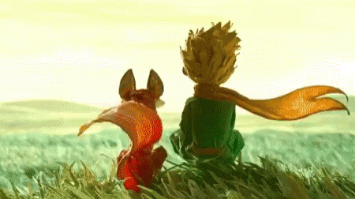
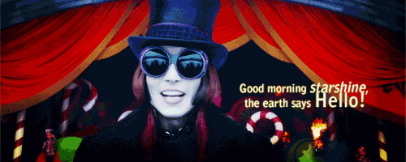
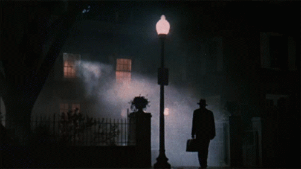

La novela fue publicada en abril de 1943, tanto en francés como en inglés, por la editorial estadounidense Reynal & Hitchcock, mientras que la editorial francesa Gallimard no pudo imprimir la obra hasta 1946, tras la liberación de Francia. Incluido entre los mejores libros del siglo XX en Francia, El principito se ha convertido en el libro escrito en francés más leído y más traducido de todos los tiempos.

Reseña: El Principito (1943), de Antoine de Saint-Exupéry, es un clásico filosófico disfrazado de cuento infantil que narra el viaje de un pequeño príncipe desde el asteroide B 612 a la Tierra
Personajes:El principito, El aviador, El cordero,El farolero,La caja, La rosa, Los baobabs, Los volcanes, El fanal o globo, El zorro, El rey, El avaro o vanidoso,
Harry Potter es una serie de novelas fantásticas escrita por la autora británica J. K. Rowling, en la que se describen las aventuras del joven aprendiz de magia y hechicería Harry Potter y sus amigos Hermione Granger y Ron Weasley, durante los años que pasan en el Colegio Hogwarts de Magia y Hechicería. El argumento se centra en la lucha entre Harry Potter y el malvado mago Lord Voldemort, quien asesinó a los padres de Harry en su afán de conquistar el mundo mágico.
Reseña: La saga de Harry Potter, escrita por J.K. Rowling, es una obra fundamental de la literatura fantástica juvenil que narra la maduración del joven mago Harry y sus amigos, Ron y Hermione, contra el malvado Lord Voldemort
Personajes: Harry Potter ,Ron Weasley ,Hermione Granger ,Albus Dumbledore ,horrocruxes,Bellatrix Lestrange ,Lord Voldemort,Los mortífagos
Charlie y la fábrica de chocolate (título original: Charlie and the Chocolate Factory) es una novela infantil escrita por el autor inglés Roald Dahl y publicada en 1964. Narra la historia de Charlie Bucket, un niño rodeado de pobreza extrema, cuyo destino cambia al conocer al excéntrico Willy Wonka, dueño de la fábrica de chocolate cercana a su casa.

Reseña:Charlie y la fábrica de chocolate (1964) de Roald Dahl es un clásico infantil atemporal sobre Charlie Bucket, un niño pobre pero bondadoso que gana una visita a la mágica fábrica de Willy Wonka. A través de un humor irreverente, el libro premia la honestidad y castiga la avaricia de cuatro niños mimados, convirtiéndose en una lección moral vibrante y divertida
Personajes: Charlie Bucket, Willy Wonka, Abuelo Joe, Los Oompa-Loompas, Sr. y Sra. Bucket
Las aventuras de Sherlock Holmes (en inglés: The Adventures of Sherlock Holmes) es una colección de doce cuentos escritos por Arthur Conan Doyle, en los que el personaje principal es el detective de ficción Sherlock Holmes. Se publicaron por primera vez el 14 de octubre de 1892; las historias se habían publicado individualmente en The Strand Magazine entre junio de 1891 y julio de 1892. En el libro no se presentan las historias en orden cronológico y los únicos personajes que se repiten en todos ellas son Holmes y el doctor Watson, quien los narra en primera persona.

Reseña: Las aventuras de Sherlock Holmes (1892) es una colección esencial de 12 relatos cortos de Arthur Conan Doyle que consolidó al detective como icono cultural
Personajes: Sherlock Holmes, Dr. John Watson, Irene Adler, Señora Hudson, Mycroft Holmes, Inspector Lestrade
El exorcista es una novela de terror escrita por William Peter Blatty y publicada en 1971. Se basa en un exorcismo efectuado en 1949, y del que Blatty oyó hablar en 1950, cuando recibía clases en la Universidad de Georgetown, un centro dirigido por sacerdotes jesuitas.
El exorcismo fue parcialmente realizado en Mount Rainier, Maryland[1] y Bel-Nor, Misuri.[2] Varios periódicos locales informaron del sermón que un sacerdote dio a un grupo de aficionados en parapsicología, y en el que este afirmaba haber realizado un exorcismo sobre una joven de trece años llamada Regan Mannheim, tras un largo proceso que llevó más de seis semanas antes de terminar el 19 de abril de 1949.

Reseña: "El exorcista" (1971), de William Peter Blatty, es un clásico de terror y best-seller basado en hechos reales sobre la posesión de una niña de 11 años, Regan, y la lucha de su madre atea y dos sacerdotes por salvarla. La obra destaca por su ritmo frenético, diálogos agudos y un profundo análisis psicológico sobre la fe, la culpa y la ciencia
Personajes:Regan MacNeil, Chris MacNeil, Padre Damien Karras, Padre Lankester Merrin, Pazuzu,
Estas obras se desarrollan en un universo donde coexisten cuentos de hadas y mitologías, tanto paganas como judeocristianas , con sus personajes junto a los humanos comunes. Una raza de humanos con sangre angelical, los Nephilim o Cazadores de Sombras, se organiza para patrullar el Mundo de las Sombras e impedir que demonios y seres del Inframundo, incluyendo brujos , hadas , hombres lobo y vampiros , ataquen a los humanos comunes. Existe una paz precaria, un tratado conocido como Los Acuerdos, entre el órgano gobernante de los Nephilim, la Clave, y los seres del Inframundo, no todos deseosos de paz ni respetuosos con la autoridad
Resseña: La saga Cazadores de Sombras (The Mortal Instruments) de Cassandra Clare es una popular serie de fantasía urbana juvenil. Destaca por su narrativa ágil, acción constante y un mundo rico en criaturas sobrenaturales (vampiros, hadas, licántropos) y Nephilim (cazadores de sombras)
Personajes: Clary Fray, Jace Herondale (Wayland), Simon Lewis, Alec Lightwood, Isabelle Lightwood,Magnus Bane
Con el título de El diario de Ana Frank (título original en neerlandés: Het Achterhuis) se conoce la edición de los diarios personales escritos por la adolescente Ana Frank entre el 12 de junio de 1942 y el 1 de agosto de 1944, en un total de tres cuadernos conservados en la actualidad. Si bien se ha atribuido una coautoría del manuscrito a su padre, Otto Frank, desde la propia Fundación Ana Frank. En los relatos, se cuenta la historia y vida de Ana Frank como adolescente y los dos años en que permaneció oculta junto a su familia de origen judío de los nazis en Ámsterdam, en plena Segunda Guerra Mundial, hasta que fueron descubiertos.
Reseña: El diario de Ana Frank es el testimonio íntimo de una niña judía que relata los dos años (1942-1944) que pasó escondida junto a su familia en Ámsterdam para escapar de los nazis
Personajes: Ana Frank, Otto Frank, Edith Frank, Margot Frank, Familia Van Daan (Van Pels), Albert Dussel